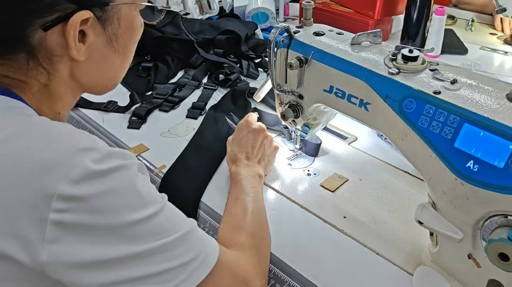

Two factories can quote the same dress and still be offering very different services. One may expect a finished pattern and nominated fabric. Another may include pattern development, sourcing and sample revisions. Until those differences are clear, comparing unit prices tells an independent brand very little.
Price and production capacity matter, but they are only part of the decision. For womenswear, the factory also needs to understand fabric behaviour, fit, pattern development, finishing, size grading, quality control and the level of communication a design-led brand requires.
This guide sets out the questions worth asking before choosing a womenswear manufacturer for dresses, tops, shirts, trousers, jackets, knitwear, jersey, tailoring or a private label collection.
1. Can the Manufacturer Develop Your Ideas?
Not every brand begins with a complete tech pack. You may have a sketch, a reference garment, a photograph, a fabric sample or an early sample that needs work. A capable garment development partner should be able to understand the starting point and help turn it into a workable pattern and production sample.
Ask how the factory handles construction questions. Can it identify a problem with the neckline, sleeve, waistband, lining or seam finish? Can it explain what needs to change and why? A useful partner contributes practical knowledge without taking control of the brand's creative direction.
Bring one representative style to the first discussion. Ask what information is missing, what the sample fee includes, how revisions are charged and who owns the patterns and grading files. If the starting point is a photograph, explain the fit and details you want rather than expecting a factory to infer measurements from the image.
2. Can They Help With Fabric and Trims?
Fabric selection can determine how a garment looks, feels and performs. Linen, cotton, viscose, jersey, recycled fibres and woven blends all have different requirements during cutting, sewing, pressing and washing.
A manufacturer with fabric and trim sourcing experience can help compare suitable options, check availability, consider shrinkage and discuss whether the material is appropriate for the planned quantity. The same applies to linings, buttons, labels, zips, elastic, packaging and other accessories.
Good sourcing support does not mean choosing the cheapest material. It means finding a material that supports the silhouette, target price, quality expectations and repeat production plan.
Ask for a swatch with its fibre composition, weight, usable width and supplier reference. Review care requirements and agree any wash or shrinkage checks before approval. For a fabric described as certified, request documentation relevant to that material and order; a general claim about a mill does not establish the status of every fabric it sells.
3. Can They Work With Smaller Orders?
Large MOQs can create unnecessary pressure for independent labels. A low MOQ clothing manufacturer gives a brand more room to test new styles, seasonal capsules, new materials and new product categories before committing to a larger programme.
Small-batch production is particularly useful for:
- new or emerging fashion brands;
- limited collections and capsule launches;
- first orders for a new silhouette;
- market testing before wholesale expansion; and
- repeat orders for styles that have already proved their demand.
MOQ is never a single number that works for every garment. Fabric availability, colour count, construction, trims and order quantity all influence the practical minimum. A reliable factory should explain those factors clearly.
Get the minimum per style and per colour in writing, along with any surcharge and material balance you would need to purchase. If you are comparing factories for a first European collection, our guide to planning small-batch production explains how fabric purchasing and delivery affect the order.
4. Do They Understand Fit and Pattern Making?
A garment can be technically sewn and still fail on the body. Small changes to the shoulder, neckline, sleeve, rise, waist or length can change the character of a silhouette.
Ask whether the manufacturer can support pattern making, grading and fit development. Find out how sample comments are recorded and whether the updated measurements are checked before bulk cutting. The process should make it possible to compare the final production sample with the approved version.
This is especially important for womenswear because a collection often includes fluid dresses, fitted tops, tailored trousers and relaxed pieces that each require different fitting decisions.
A practical fit review should include sitting, walking and reaching, not just standing for photographs. On trousers, check the rise and waistband when seated. On a woven top, check movement through the shoulder and armhole. Agree a base size, measurement points and tolerances, then ask how the smaller and larger sizes will be checked before production.
5. Can They Produce Different Womenswear Categories?
As a brand grows, the product range often changes. A label that begins with dresses may later add shirts, trousers, tailoring, jersey, jackets, outerwear or knitwear. Working with a partner that understands more than one category can reduce the need to manage several disconnected production relationships.
Cyncho supports woven womenswear and works with invested knitwear and sweater factory resources. This allows brands to discuss women’s tops, shirts, pants, dresses, jackets, coats, knit tops, cardigans, pullovers and knitted styles with a connected production team.
Category breadth should still be assessed carefully. Ask to see relevant examples, discuss the machinery and finishing needed for your product and confirm which processes are handled directly or through a production partner.
6. Can They Repeat a Successful Style?
The first sample is only the beginning. When a style becomes successful, the brand needs to reproduce it without losing the original fit, fabric appearance, measurements or construction quality.
Ask how the factory manages approved samples, fabric references, measurement charts, trims, grading and quality checks. A repeat order should be based on clear production records rather than memory or a short message thread.
Before a reorder, confirm whether the mill, dye lot, yarn lot or trim supplier has changed. Keep an approved reference sample and record any changes both sides accept. Also agree when inspections take place, how defects are documented and what happens if production does not meet the agreed standard. A final photograph alone will not answer those questions.
7. Is Communication Clear Before the Order?
Communication problems usually appear before production starts. If a factory avoids direct answers about MOQ, sampling, fabric availability, lead time or quality control, those issues rarely become easier after the order is placed.
A good first conversation should clarify:
- what information the factory needs to quote the style;
- how samples are developed and revised;
- which materials and trims can be sourced;
- how production timing is estimated;
- how quality concerns are reported and resolved; and
- who will communicate with the brand during development and bulk production.
Clear communication does not require long meetings. It requires accurate answers, written decisions and a shared understanding of what has been approved.
Compare a Written Brief, Then Test One Style
Send the same information to each shortlisted factory: drawings or a tech pack, fabric requirements, quantities by size and colour, target price, quality expectations and delivery destination. Ask each factory to identify exclusions such as labels, packaging, freight, testing or additional sample rounds.
Before paying for development, confirm the company and production address, the quoted work, payment milestones and the process for approving changes. A sample order can then show you how the team handles questions, deadlines and corrections. Use what you learn to decide whether to proceed to bulk production.
Discussing Your Collection With Cyncho
Independent fashion brands do not always need the biggest factory. They need a partner that can support the journey from idea to sample, small batch, repeat production and a larger seasonal programme when the product earns it.
Established in 2010, Cyncho is based in Dongguan, China, with a wholly-owned woven factory and invested knitwear and sweater factory resources. We support fabric and trim sourcing, garment development, sampling, bulk production and after-sales communication. Our experience includes customers in Australia, New Zealand, the United States, the United Kingdom and Germany.
Whether you have a complete tech pack or are still developing the first sample, send us your reference images, product category, fabric direction, target quantity and delivery window. We can review the project and suggest a practical route from development through production.
Explore our womenswear manufacturing, custom garment production, knitwear manufacturing, fabric and trim sourcing and request a factory quote.